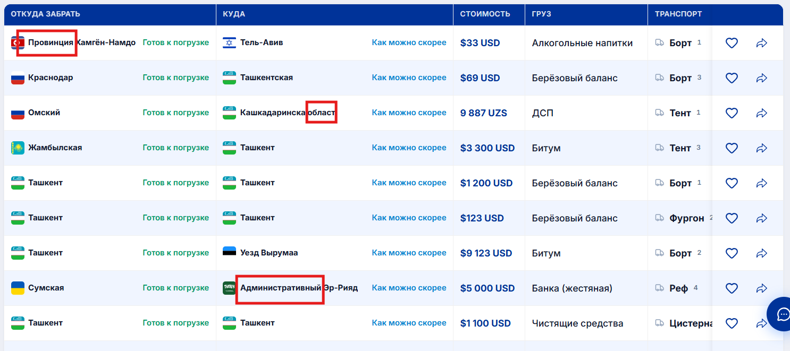
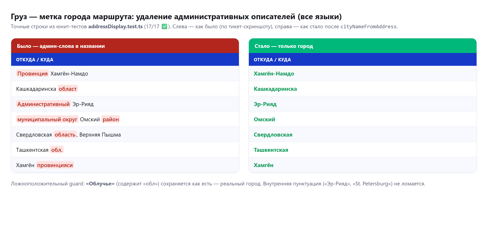
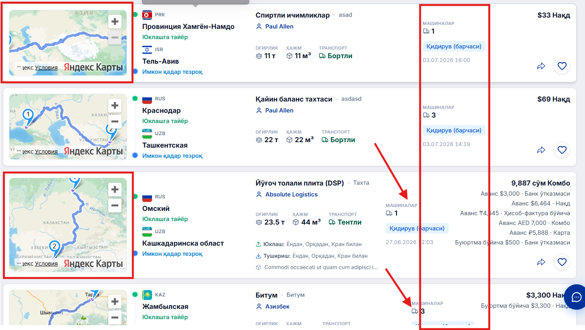
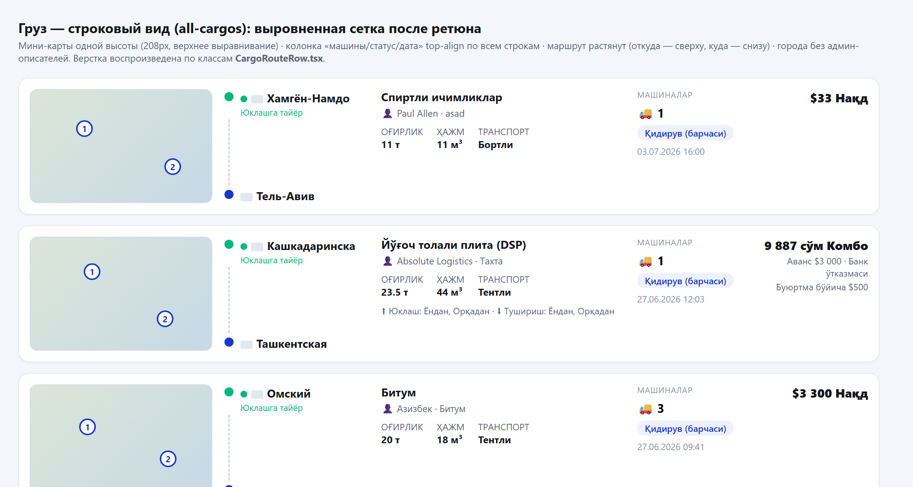

04.07.2026 — день доводки после больших функций 03.07. Видеозвонок: устранена регрессия коммита 5a9235ab, из-за которой звонящий не видел веб-камеру собеседника (был удалён рабочий сигнал track.onunmute); добавлен watchdog живости кадров (камера-off больше не «замораживает» кадр), восстановление модалки звонка после перезагрузки страницы, и закрыты 3 регрессии из ревью (межвкладочный перехват звонка, само-ослепление watchdog, ошибочная маршрутизация «телефон vs имя»). Модалка звонка переведена в полноэкранный Telegram-стиль. Видео-кружки: мгновенный старт записи, прозрачный оверлей, реальная пауза, кольцо прогресса загрузки с отменой. Груз: метки городов маршрута теперь показывают только город (сняты «Провинция / област / Административный / муниципальный округ / район» на всех языках; приоритет — чистое имя из бэкенда), а строковый вид выровнен (карты одной высоты, колонки top-align, маршрут растянут). Оффер: поиск водителя/driver-manager по номеру телефона. Карточка водителя: отсутствующие поля скрываются (а не «Маълумот йўқ»), добавлена мини-карта live-локации. Админ: полный адаптив консоли (4K → 360px) + тренд-график dashboard.
| Область | Что было / причина | Что сделано | Файлы |
|---|---|---|---|
| Видеозвонок — звонящий не видел веб-камеру собеседника bug закоммичено |
A звонит B, B принимает — A видит только свою камеру в PiP, видео собеседника не появляется. B видит оба потока. Регрессия коммита 5a9235ab. | Восстановлен track-mute сигнал в pc.ontrack (onunmute/onmute/onended → setHasRemoteVideo(!track.muted)); DOM-frame события теперь только подтверждают видимость. Добавлен offerInFlightRef — идемпотентность оффера (3 некоординированных триггера не гонят 2 оффера на один RTCPeerConnection). | GlobalAudioCallModal.tsx (ontrack, createAndSendOffer), locales ×15 |
| Видеозвонок — Telegram-стиль полноэкранный оверлей redesign закоммичено |
Маленькая плавающая перетаскиваемая карточка с maximize-переключателем; ключи declineCall/acceptCall/endCall отсутствовали во всех локалях. | fixed inset-0 оверлей: object-cover видео edge-to-edge, self-view PiP снизу-справа, докнутые кнопки (CallControlButton), центрированный аватар для аудио. «Свернуть в угол» вместо maximize; role=dialog/aria-modal, фокус, Escape-сворачивание. +4 i18n-ключа ×15. | GlobalAudioCallModal.tsx, locales ×15 |
| Видеозвонок — камера-OFF замораживала кадр; reload терял модалку bug закоммичено |
Собеседник выключил камеру — последний кадр «замерзал»; при перезагрузке страницы модалка не возвращалась, хотя звонок жив на сервере. | Watchdog живости кадров (requestVideoFrameCallback + 400мс интервал, порог ~1.2с, fallback по currentTime) очищает сцену за ~1.2с. Персист id активного звонка + восстановление на WS-open: GET /calls/:id → hydrate/restoreMedia если ACTIVE/RINGING. | GlobalAudioCallModal.tsx |
| Ревью-фиксы звонка + поиска bug закоммичено |
Мульти-ракурсное ревью вскрыло 3 реальные регрессии этого дня: межвкладочный перехват звонка, само-ослепление watchdog, ошибочная маршрутизация «телефон vs имя». | (1) localStorage → sessionStorage + scope по userId ({userId,callId}) — нет перехвата чужого звонка; (2) hasRemoteVideoTrack держит <video> смонтированным, watchdog не слепнет; (3) общий isPhoneLikeQuery (цифра И phone-shape) — «Logistic 24» снова находится. | GlobalAudioCallModal.tsx, isPhoneLikeQuery.ts (+тест), CargoDriverOfferPanel.tsx, SendOfferToDriverModal.tsx |
| Чат — видео-кружки (Telegram-style rewrite) redesign закоммичено |
Запись «видеокружка» шла через белую Modal/Drawer-карточку с in-app объяснением доступа и ручной красной кнопкой; не было паузы и прогресса загрузки. | Клик по камере сразу стартует запись; прозрачный полноэкранный оверлей (createPortal): таймер с десятыми, «Отмена», пауза/резюме (реальный MediaRecorder.pause()/resume()), «Отправить»; оптимистичный пузырёк с кольцом прогресса и крестиком отмены загрузки. | useVideoNoteRecorder.ts, ChatVideoNoteRecorder.tsx (rewrite), ChatVideoNoteMessage.tsx, useVideoNoteUploadStore.ts (new), useChatMediaUploadMutation.ts, chatHelpers.ts, locales ×15 |
| Груз — метка города содержала админ-описатели bug закоммичено |
from/to показывали «Провинция Хамгён-Намдо», «Кашкадаринска област», «Административный Эр-Рияд», «муниципальный округ Омский район», полный адрес или сокращение «Toshkent Vil.» (offers / my-cargos / all-cargos). | Расширены GEO_ADMIN_WORDS + GEO_QUALIFIER_RE (Safari-safe, без lookbehind); чистка орфанной пунктуации. summarizeCargoRoute отдаёт originCity/destinationCity = backend from_city_name/to_city_name (чистое локализованное имя), стриппинг — fallback; полный адрес — в тултипе. | addressDisplay.ts, cargoListDisplay.ts, myCargosListCells.tsx, allCargosListCells.tsx (+тесты) |
| Груз — строковый вид (all-cargos): выравнивание сетки change закоммичено |
Мини-карты разной высоты по строкам; колонка «машины/статус/дата» дрейфовала; маршрут from/to плавал в центре; после укорочения городов — большой зазор до груза. | Карта self-start + фикс h-52 (208px) обеих веток → одинаковые thumbnail'ы; meta justify-start self-start → top-align; route self-stretch → таймлайн растянут (откуда сверху / куда снизу); шаблон грида ретюнен (2fr/1fr). | CargoRouteRow.tsx |
| Груз — «Отправить оффер»: поиск по телефону bug закоммичено |
Селекты водителя и driver-manager искались только по имени; ввод телефона ничего не находил. | Общий optionMatchesNameOrPhone (имя ИЛИ телефон, как есть и digits-only) как filterOption на обоих селектах; phone на опциях; серверный запрос с цифрами уходит как phone-параметр. | CargoDriverOfferPanel.tsx |
| Карточка водителя — «Маълумот йўқ» для не пришедших полей bug закоммичено |
Detail-вьюхи водителя всегда рисовали полный шаблон и ставили «No data» для отсутствующих полей — неотличимо от явного null (тикет SARB-TASK-FRONT). | Новый isDriverFieldPresent (через key in driver); presence-гейтед ячейки рисуются только при наличии ключа; секции Documents/Vehicle/Activity + подблоки скрываются целиком; null всё ещё показывает «No data». Добавлена мини-карта live-локации. | driverFieldPresence.ts (+тест), DriverDetailsDrawer.tsx, DriverDetailsPage.tsx, DriverLocationCard/MiniMap.tsx (new) |
| Админ — адаптив всей консоли (4K → 360px) feature закоммичено |
Тело страницы горизонтально скроллило на узких экранах; модалки «багуют»; таблицы вытекали из карточек; Tailwind-override AntD был no-op (cssinjs unlayered). 9-slice аудит: 39 находок; 3-lens ревью: 5 подтверждённых. | Shared-first: новый adminResponsive.css через ConfigProvider modal/drawer → каждый оверлей капит высоту + внутр. скролл + overflow-wrap:anywhere !important; пагинация reflow; Segmented в .admin-scroll-x; <main> overflow-x-hidden. Плюс таргетные фиксы (scroll={{x}}, stat-grids, Push, ExcelViewer, GeoLayerControls). | adminResponsive.css (new), AdminChrome.tsx, AdminAnalyticsHub.tsx, AdminLayout.tsx, command-center / push / metrics / geo / users-* |
| Админ — тренд-график dashboard + инструментарий звонка feature закоммичено |
Командному центру не хватало тренд-графика series; двух-пирный звонок трудно диагностировать без инструментов. | adminDashboardSeries.ts (defensive-парсер бакетов day/week/month) + AdminLine.tsx (recharts, линия на метрику). callDebug.ts — opt-in диагностика (localStorage['sarbon:call-debug']==='1', no-op иначе, безопасно в проде). | adminDashboardSeries.ts (+тест), AdminLine.tsx, callDebug.ts (+тест) |
// src/components/shared/GlobalAudioCallModal.tsx — pc.ontrack (видео-ветка) - // 5a9235ab: видимость только по DOM-frame событиям - el.onloadedmetadata = handleRemoteVideoFrames; track.onunmute = () => { if (el.videoWidth > 0) ... } // =0 при unmute → no-op + const syncRemoteVideo = () => setHasRemoteVideo(!track.muted) // источник истины — mute-состояние трека + track.onunmute = syncRemoteVideo; track.onmute = syncRemoteVideo; track.onended = () => setHasRemoteVideo(false) + syncRemoteVideo() // немедленно — каллер теперь видит callee + const offerInFlightRef = useRef(false) // идемпотентность: 3 триггера ≠ 2 оффера // + watchdog живости кадров: requestVideoFrameCallback штампует каждый кадр; 400мс интервал // ставит hasRemoteVideo по «был ли свежий кадр за ~1.2с» → камера-off очищает сцену за ~1.2с
Изменения дня собраны в 5 коммитов ветки staging. Технические записи по всем 11 дефектам/задачам — в bug.md (корень репозитория, записи 04.07 с 10:40 до 16:40).
Ниже — реальные тикет-скриншоты «до» (присланы с задачами) и точные воспроизведения «после». Воспроизведения «после» рендерятся из фактического поведения кода: строки метки города — дословно из юнит-тестов addressDisplay.test.ts (17/17), а верстка строкового вида — по классам CargoRouteRow.tsx (headless Chrome). Функции с камерой/двумя абонентами и authenticated-GUI (видеозвонок, кружки, живая админ-консоль) гейтятся средой — для них в папке готовы capture-*.mjs (Playwright), запускаемые на локальном dev-сервере против staging.




| Артефакт | Путь |
|---|---|
| Журнал исправлений (11 записей 04.07) | bug.md (10:40 · 10:47 · 11:02 · 11:05 · 11:12 · 11:52 · 12:07 · 12:12 · 13:45 · 14:18 · 14:21 · 16:40) |
| Краткая сводка для PM (Excel) | daily-report/04.07.26/report-04.07.26.xlsx |
| Видеозвонок: фикс + Telegram-редизайн + watchdog | src/components/shared/GlobalAudioCallModal.tsx |
| Видео-кружки: запись/пауза/прогресс | src/hooks/useVideoNoteRecorder.ts · src/pages/chat/components/ChatVideoNote{Recorder,Message}.tsx · src/stores/useVideoNoteUploadStore.ts |
| Метка города маршрута (стриппинг + backend city) | src/utils/addressDisplay.ts · src/utils/cargoListDisplay.ts |
| Строковый вид: выравнивание сетки | src/pages/cargos/all-cargos/components/CargoRouteRow.tsx |
| Оффер: поиск по телефону | src/pages/cargos/components/CargoDriverOfferPanel.tsx · src/utils/isPhoneLikeQuery.ts |
| Карточка водителя: presence + мини-карта | src/utils/driverFieldPresence.ts · src/pages/drivers/components/DriverLocation{Card,MiniMap}.tsx |
| Адаптив админ-консоли | src/components/shared/admin/adminResponsive.css · src/layouts/admin-layout/AdminLayout.tsx |
| Тренд-график dashboard + call-debug | src/utils/adminDashboardSeries.ts · .../charts/AdminLine.tsx · src/utils/callDebug.ts |
| Скриншоты (до/после) + capture-скрипты | daily-report/04.07.26/img/ · daily-report/04.07.26/capture-*.mjs |
| Отчёт предыдущего дня | daily-report/03.07.26/index.html |
При сверке git-диффа дня с отчётом обнаружены изменённые области, которые не были задокументированы. Добавлены ниже (текстовая доработка отчёта, без скриншотов).
Полный дифф дня — 80 файлов.
| Область | Значимость | Файлы / коммит |
|---|---|---|
| Бинарный артефакт в корне: Sarbon_Admin_Malumotlar_Auditi.xlsx (61КБ) | мелкое | добавлен в коммите 48c61aa5, в отчёте не упомянут |